| 日付 | 2015年8月8日（土） - 2015年8月11日（火） | ||||||
|---|---|---|---|---|---|---|---|
| 山域 | 八ヶ岳、中央アルプス、近畿の山 | ||||||
| メンバー | 家族（妻、長女・4歳、長男・2歳） | ||||||
| 山行形態 | 子連れ3泊4日ホテル泊 | ||||||
| アクセス | 車、ロープウェイ | ||||||
| ルート (Map3) |
|
4日目
本日は御在所岳へ行く。今日もよく晴れている。
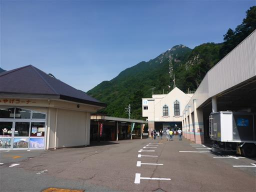
今回の旅行では、すでに結構歩いているので、
ロープウェイで上まで行って、下りに歩く予定だ。
付近は思った以上に栄えている温泉街で、ホテルが立ち並んでいる。
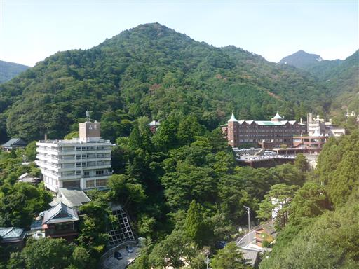
かなり高度感のあるロープウェイだ。
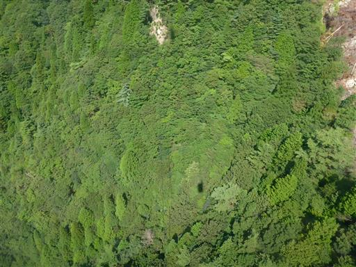
尾根に岩が露出していて、登山者が歩いているのが見える。
下山時に歩く予定の場所だ。

高さ61mの美しい白い鉄塔。
ロープウェイの支柱としては日本一の高さらしい。
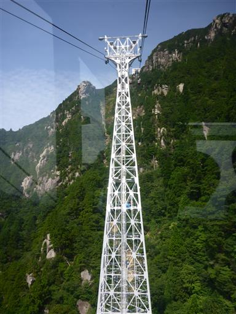
山頂部に近づいてきた。あちらこちらに岩が見え、美しい景色が広がる。
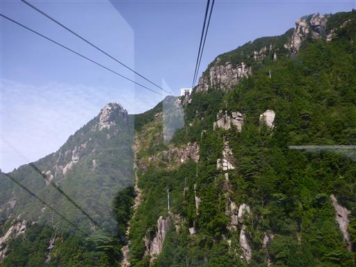
山上公園駅に到着する。目の前に見えるピークが御在所岳だ。
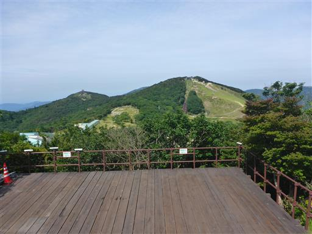
山頂部はしっかり整備されていて、あまり山という感じがしない。
車道を歩いて山頂を目指す。
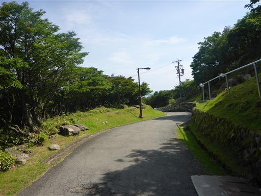
ロープウェイから山頂までわずかの距離なのだが、リフトも整備されている。
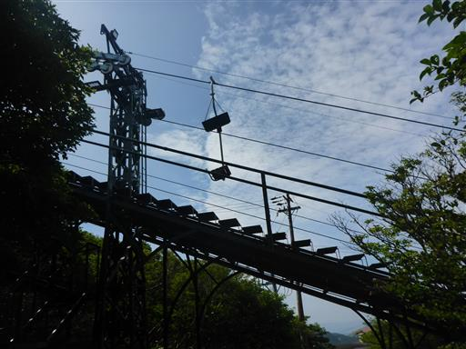
虫取り網を持った家族連れがいる。トンボを捕まえているようだ。

展望台に立ち寄る。
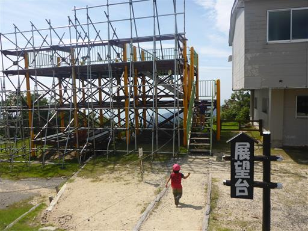
目の前に見えるピークは鎌ヶ岳。尖った山頂を持つ格好良い山だ。
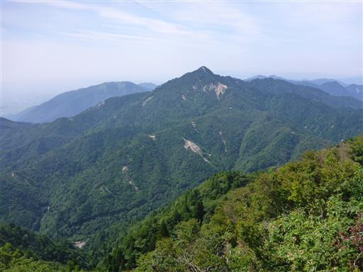
トンボを捕まえる。
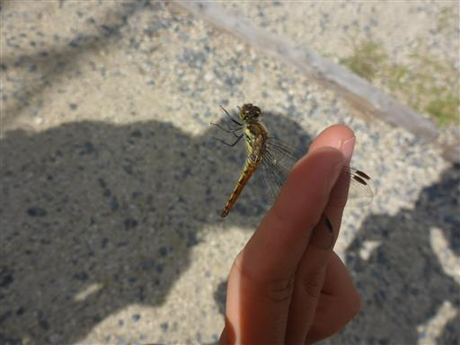
山頂まではひたすら蛇行した車道が続く。
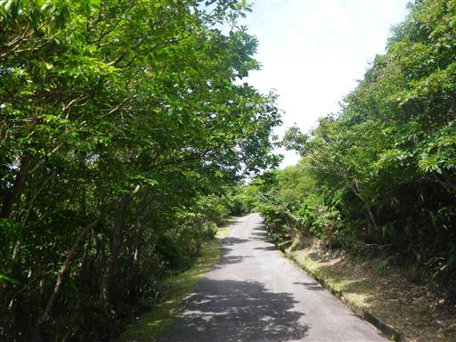
階段を登って御在所岳山頂に到着する。
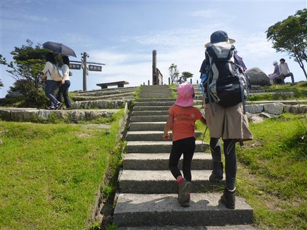
立派な一等三角点がある。鎖で囲われていて近づけないようになっている。
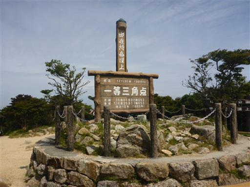
三角点峰はここだが、最高地点はすぐ隣にあるピークのようだ。

ヘリコプターが飛んでいる。
何事かと思ったら、登山者に「遭難しないよう十分に気を付けて」という放送を繰り返し行っている。
周囲を旋回して、しつこく放送を続けるため、かなりうるさい。
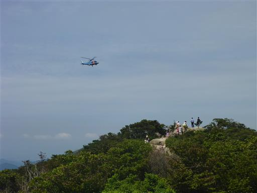
お隣のピークに移動する。こちらが御在所岳の山頂だ。 標高1212m。
望湖台と記載されているが、残念ながら靄がかかっていて琵琶湖は見えない。
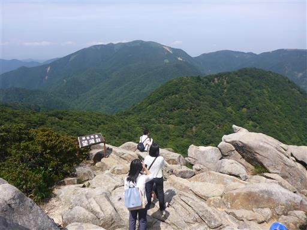
遠望はないが、鈴鹿の山々の展望は素晴らしい。
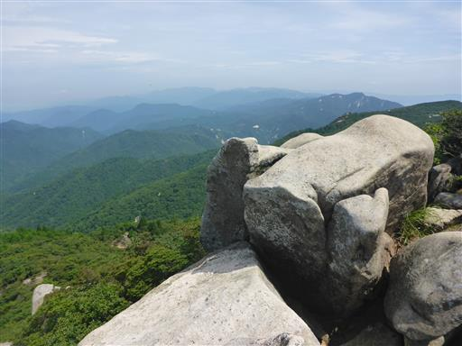
岩がちな山頂でおやつを食べる。息子はうろうろするため危なっかしい。
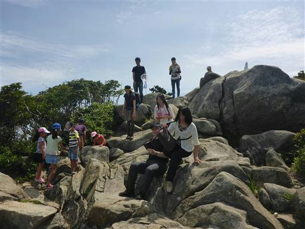
どうやらロープウェイ乗り場まで、車道以外にスキー場も歩けるようだ。
帰りはスキー場経由で歩くことにする。
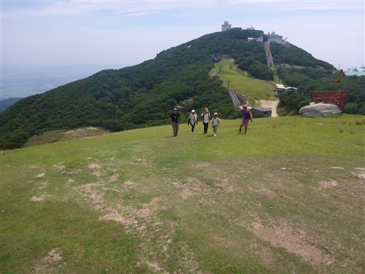
娘はわざわざ階段を下って、木道を歩いている。
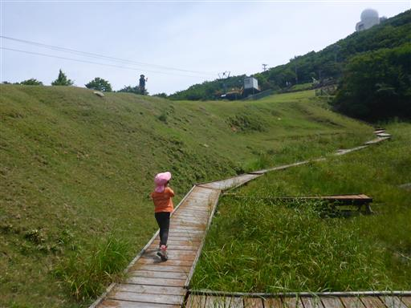
周囲はあまりきれいとは言えない水たまりだ。
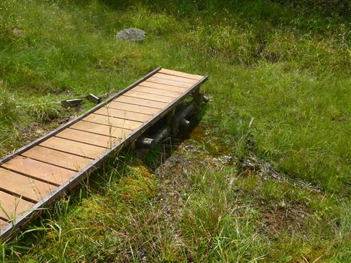
中道の下山道入口に到着する。
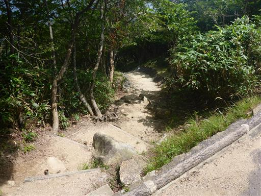
木に金網が巻きつけられている。シカの食害を守るためだろうか？
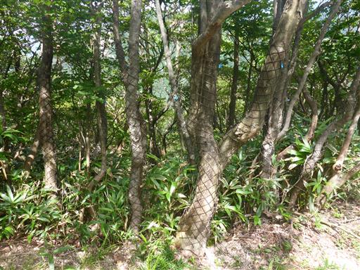
周囲は岩がちな地形で、ところどころで展望が広がる。
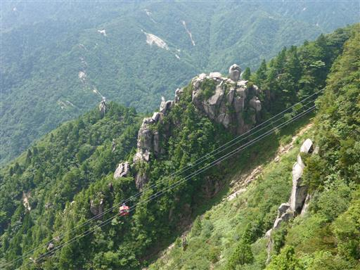
白い鉄塔が目立っている。
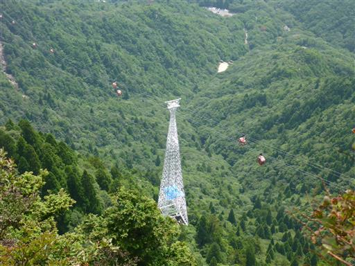
この登山道はそこそこ難易度の高い道だ。
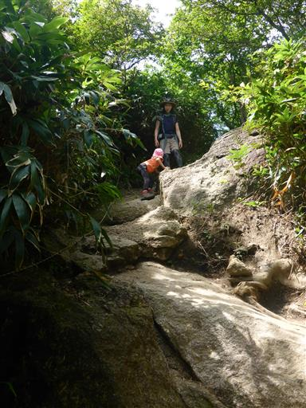
岩棚。ここも展望が良い。その先は崖だ。
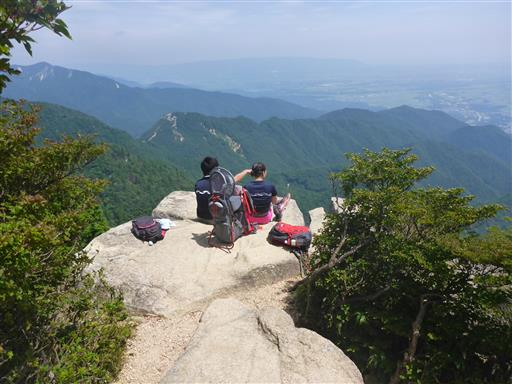
周囲に広がる岩壁が美しい。
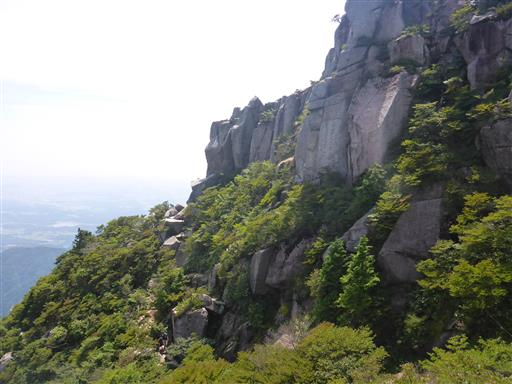
岩場を慎重に下る。
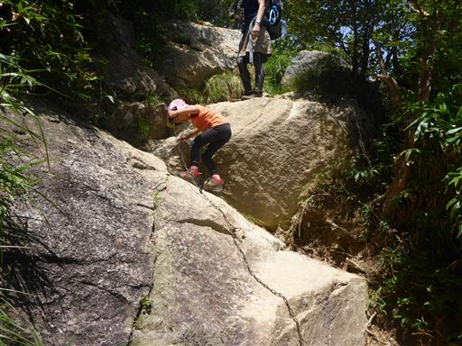
岩場以外も気が抜けない道が続く。大岩がたくさん転がっている。
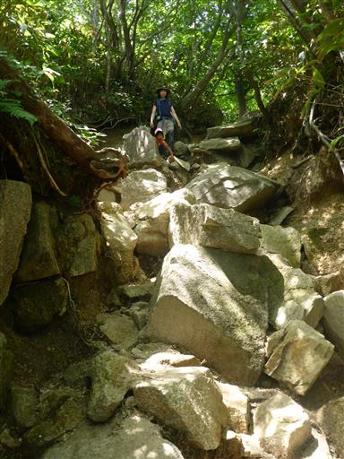
12時近くになったため、展望が開けたところで昼食をとる。
息子は深く眠っていて、昼食中に起きなかった。
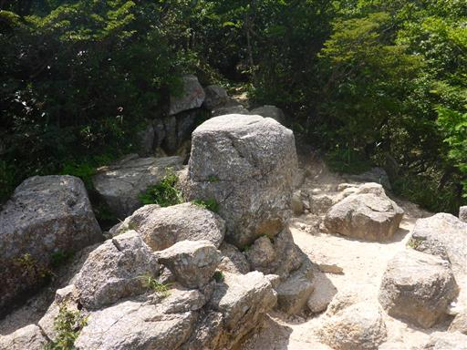
昼食をとったら先に進む。木でできた梯子を下る。
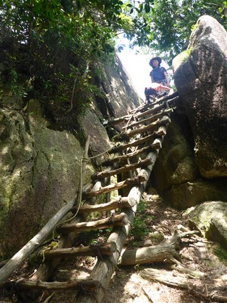
ロープウェイから見えていた場所に出てきた。
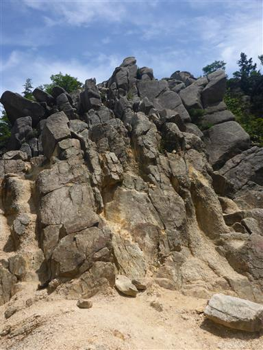
長い鎖場を登る。
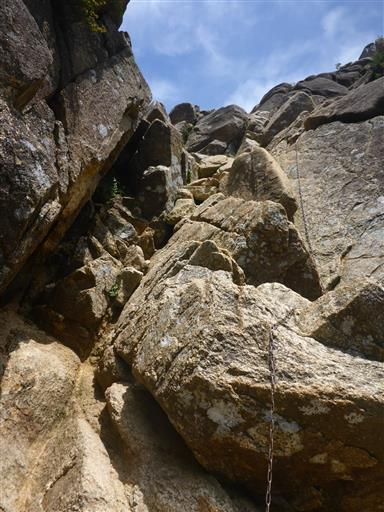
娘も頑張って登っている。難易度はさほど高くない鎖場だ。
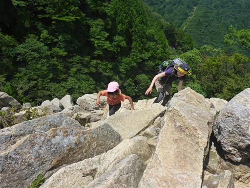
ロープウェイが見える。ロープウェイからもこちらが見えているだろうか？
息子が目を覚ましたため、ここで息子の昼食。時間がかかってしょうがない。
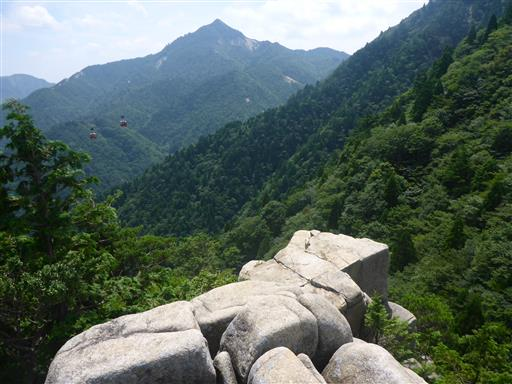
地蔵岩。奇岩中の奇岩だ。
インターネットで見ると岩の上に登っている人の写真があったが、容易には登れなさそうだ。
側に岩登り禁止との標識が立っている。

ざれた斜面。両手をつきながら下って行く。
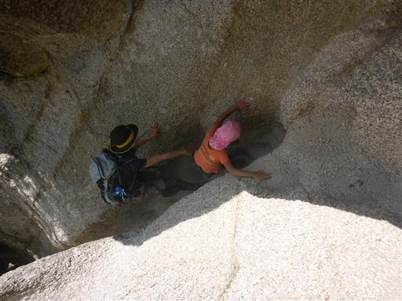
振り返って御在所岳を望む。標高は高くないが立派な姿だ。
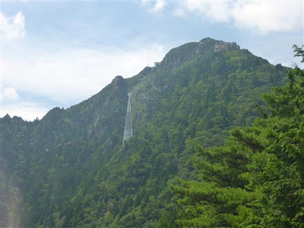
負ばれ岩。2枚の巨大な岩が重なっている。
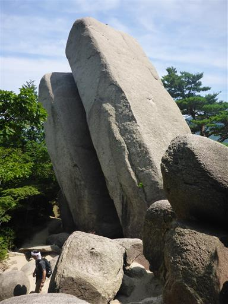
その岩の間を抜けて行く。
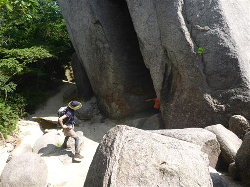
中は狭い。息子を背負っていると通過が難しい。体を斜めにしてすり抜ける。

ロープウェイと登山道が交差する場所に出てくる。
ロープウェイの人が手を振ってくれる。
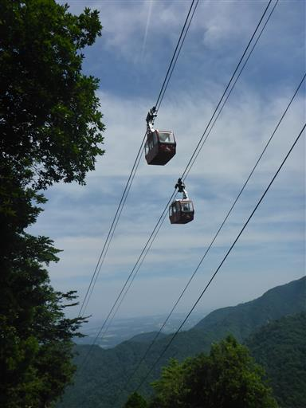
滑りやすい斜面が続く。まったく楽をさせてくれない登山道だ。
それでも娘は一度もこけずに歩いている。歩くのがだいぶ上手になった。
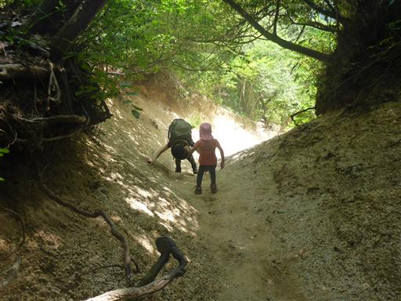
思ったよりも時間がかかったが、ようやく下山する。

下山地点は鈴鹿スカイラインの真っただ中。
一人、急ぎ足でロープウェイ乗り場まで車を取りに戻る。
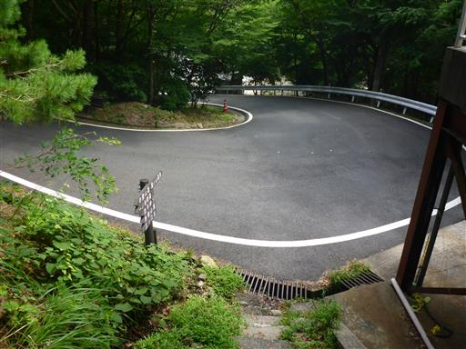
川の水がきれいだ。温泉街が近づいてくると、川遊びしている家族も見られる。
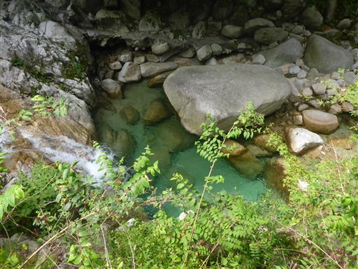
駐車場に到着。観光客で賑わっている。家族を回収して実家に向かう。
家族旅行として初めて晴れた夏休みとなり、美しい景色をたくさん眺められた。
昨年は行けなかった木曽駒ヶ岳にも無事登れ、充実した旅行となった。
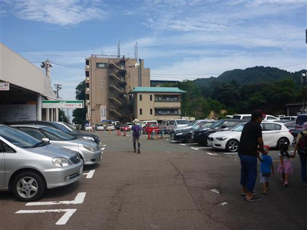